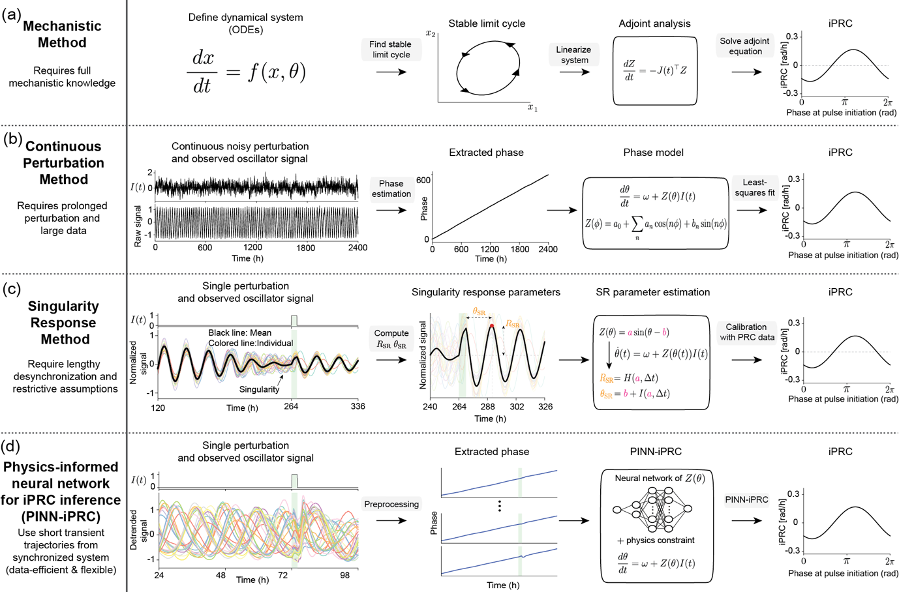

I am a master's-stage student in the integrated master's/doctoral program in Mathematical Sciences at KAIST, advised by Wooseok Ha. I received my B.S. in Mathematical Sciences, with a double major in Computer Science, from KAIST, and spent a semester at UT Austin as an exchange student. I have also completed three research internship terms in Jae Kyoung Kim's Biomedical Mathematics Group at IBS.
I study what limited, noisy time-series data can reveal about the hidden dynamics behind them, and how modeling assumptions, regularization, and estimation algorithms decide the answer. My work spans physics-informed machine learning, early stopping in EM algorithms, identifiability of latent dynamics, and epidemic modeling.
I am applying to Ph.D. programs in applied mathematics and statistics for Fall 2027.
CV | GitHub | LinkedIn | aiwwdw@kaist.ac.kr
Selected research
-
A physics-informed neural network framework for inferring infinitesimal phase response curves from finite-pulse circadian recordings
Nature Communications, accepted (2026)
bioRxiv | code

Comparison of iPRC inference methods: mechanistic (a), continuous perturbation (b), singularity response (c), and PINN-iPRC (d), which infers the iPRC from short transient phase trajectories after finite-pulse stimuli, using a neural network constrained by the phase equation. - Initial-condition estimation in epidemic models (Hist-LQ) Manuscript in preparation
- Early stopping for Poisson EM Manuscript in preparation
- Latent representation and dynamics identifiability Manuscript in preparation

* Equal contribution. Project descriptions are on the Research page.
Honors
Outstanding Poster Presentation Award (1st Place), A3 Foresight Workshop "Beyond Data – Synergy between Mathematics and AI", IBS, Daejeon, August 2026.
Education
KAIST
- Integrated master's/doctoral program in Mathematical Sciences (master's stage), March 2026 – present. Advisor: Wooseok Ha
- B.S. in Mathematical Sciences, double major in Computer Science, February 2019 – February 2026
The University of Texas at Austin
- Exchange student, Department of Mathematics, January – June 2025
Contact
Email: aiwwdw@kaist.ac.kr
Department of Mathematical Sciences, KAIST, Daejeon, South Korea